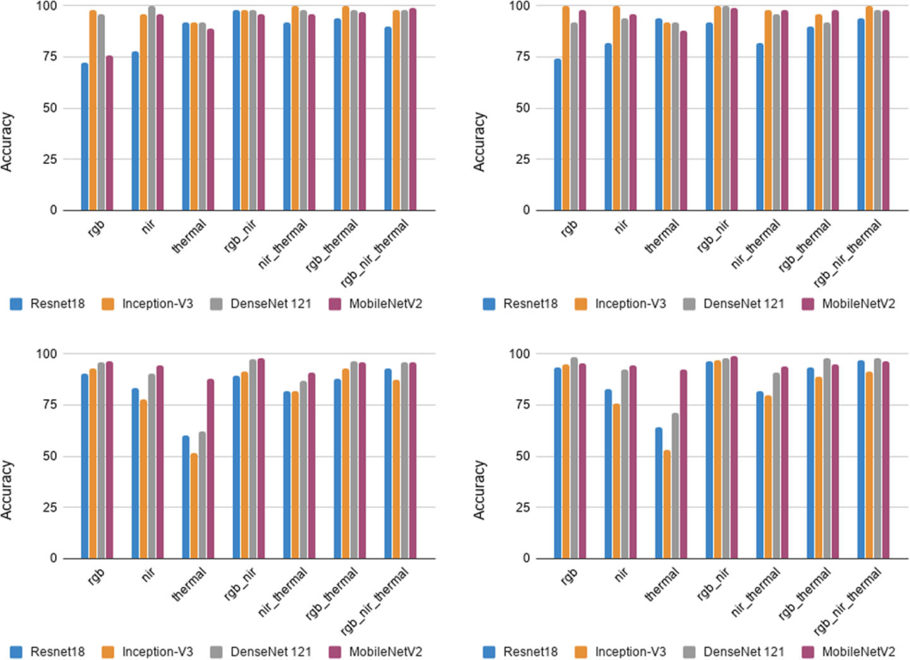

A photo collection of desk objects in visible, near-infrared and thermal light
An ordinary camera sees what our eyes see, and that is not always enough. In fog or poor light it struggles, and some materials look the same to it. We built JU-VNT, a collection of 7,800 photographs of everyday desk objects taken in three kinds of light: visible, near-infrared and thermal. We labelled the images, lined them up with each other, and tested standard neural networks on them.
Why three kinds of light
Each spectrum shows something different. Visible light gives colour, texture and shape. Near-infrared (NIR) light sits just beyond red. A camera that only accepts it keeps working in fog, and an infrared lamp can light a scene at night. It also copes better than visible light with glass, which bends and reflects light. Thermal cameras record heat, so they do not depend on the light source at all, although they are expensive and can struggle in warm surroundings.
Datasets that pair two of these spectra exist, for example visible with thermal for street scenes. We found none that had all three. Having three cameras also brings practical complications, such as different lenses, viewpoints, sharpness and noise, which the dataset also carries.
How the photos were taken
We used a Nikon D3200 for visible light, a Watec WAT-902H2 camera with a filter that blocks everything below 830 nm for NIR, and a FLIR A655SC for thermal. The three cameras stood on tripods of different heights so that none blocked another, looking at a table covered in white paper, with an infrared lamp on the ceiling above it.

There are 25 objects, made of wood, plastic, glass, ceramic, metal and other materials. They include a stapler, scissors, a key, a cup, a pair of spectacles and a power bank. We rotated each object in 45 degree steps to get 8 views. That gives 600 images of single objects (25 objects, 8 angles, 3 spectra). We did the same for every pair of objects, which gives 7,200 more.
The three cameras do not see the table from the same spot, so their images do not line up. Before each set we took one extra shot with three vertical metal markers around the objects. The marker tips gave us three matching points. From those, an affine transformation (a mix of rotation, scaling and skewing) maps the NIR and thermal images onto the visible one, and we then tidied the result by hand. All three images are cropped with one window, found from the NIR image. We also give the objects' bounding boxes, in XML, and sort the images into folders by class.

What the benchmarks show
We trained four standard networks, ResNet18, Inception-V3, DenseNet-121 and MobileNetV2, on a random 3:1 train and test split. We tried each spectrum alone and every combination, with and without random flips of the images as data augmentation.
Single objects were easy. Several networks reached 98 to 100% on RGB or NIR alone, so the differences between spectra are small at that level. Pairs were harder. Thermal alone did poorly: averaged over the four networks it reached 65.41% without augmentation, against 93.85% for RGB. The paper explains that when two objects have similar temperatures, the network sees one blob.
Adding the third spectrum slightly lowered the average in both datasets, with or without augmentation. The paper reads this as a sign that standard networks are not built to fuse more than two spectra, and it offers JU-VNT as a testbed for that problem. The best score on pairs was 99.00%, from MobileNetV2 on RGB plus NIR with augmentation.

What it does not do
The registration is approximate. The cameras view the table from slightly different angles, so a pixel-exact match is technically impossible, as the paper says. The objects are ordinary desk items photographed indoors on white paper, so this is a controlled setting, not a street.
We see it as a starting point. Beyond classification and finding objects, the paper suggests translating images from one spectrum to another and generating rotated views of an object. The dataset is on GitHub.
Acknowledgements
This work is supported by the project sponsored by SERB (Government of India, order no. SB/S3/EECE/054/2016, dated 25/11/2016), and was carried out at the Centre for Microprocessor Application for Training Education and Research, CSE Department, Jadavpur University. The authors thank the team that made the collection of the dataset possible. Image capturing: Subham Jana and Puspendu Khan. Data preprocessing: Tathagata Bandyopadhyay, Anwesha Sen and Soupik Chowdhury. Data annotation: Osman Goni, Priyam Sarkar, Rounak Dutta, Supriyo Das, Debarati Roy and Ujjwal Misra. Benchmarks: Somenath Kuiry and Bodhisatwa Mondal. Special thanks to Somenath Kuiry for his contribution during revision.
How to cite the paper
Swarnendu Ghosh, N Das, P Sarkar, M Nasipuri (2021). JU-VNT: a multi-spectral dataset of indoor object recognition using visible, near-infrared and thermal spectrum. Multimedia Tools and Applications, Vol. 80, No. 12, pp. 17807–17826 · Springer.